BigBoard · Video walkthrough
Big Board: build and verify an operational display
Add operational widgets, choose readable dimensions, reorder call, unit and personnel columns, move and remove a temporary panel, and verify the saved board after reload.
Before you begin
- An authorized signed-in BigBoard session in a fictional training department.
- Existing calls, personnel, units and a training note for a reversible display exercise.
Chapters
- Choose what a shared display should answer
- Start with the actual widget chooser
- Give the Calls widget enough room
- Bring Priority beside the call identifier
- Read the actual incident table
- Set the Units table order and dimensions
- Compare resource states and update age
- Choose a personnel column order
- Distinguish personnel status from staffing
- Enter edit mode and find the widget controls
- Move the temporary widget
- Remove the temporary panel and finish editing
- Reload and verify the saved display
Watch the walkthrough
Step 1
Choose what a shared display should answer
Resgrid Big Board brings department information into configurable widgets. Here, the Personnel table shows operational status beside staffing, with a clock below it. A duty supervisor can use this display to review readiness during a handover. The same approach can support a security control room, search-and-rescue coordination desk, community paramedicine or mental health response team, wildland contractor, industrial response team, or fire and E M S department. This walkthrough builds a readable board using fictional training data.

Practice
Decide which readiness and incident questions your display must answer.
Step 2
Start with the actual widget chooser
Start on the empty dashboard. The message directs you to the plus button in the upper right. Select it to open Add Widget. The chooser includes Calls, Units, Personnel and Time. Add those four widgets for this exercise, choosing each from the menu. The chooser also offers other widget types. Add information for a specific audience and purpose; a coordination desk and a shared briefing display may need different amounts of detail.
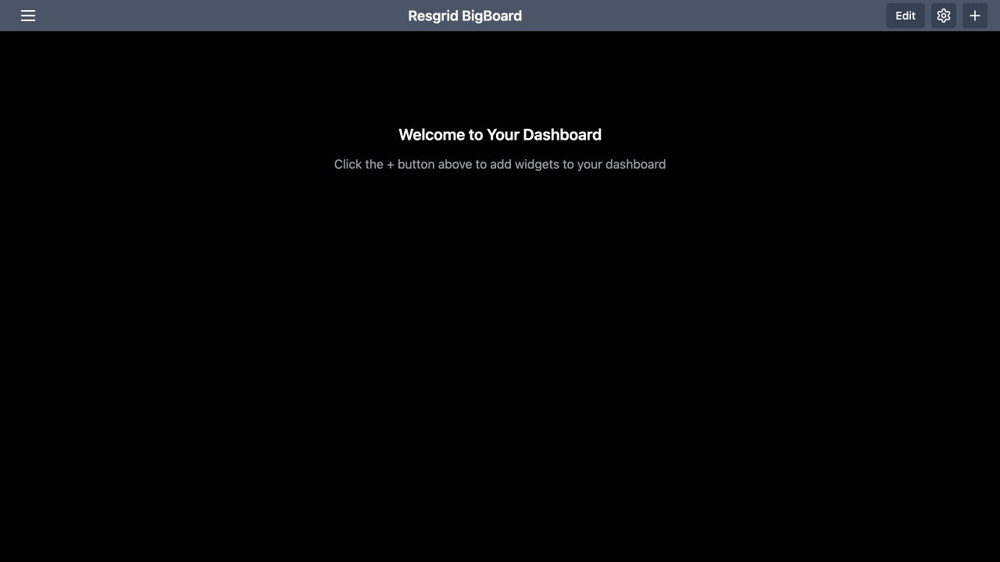
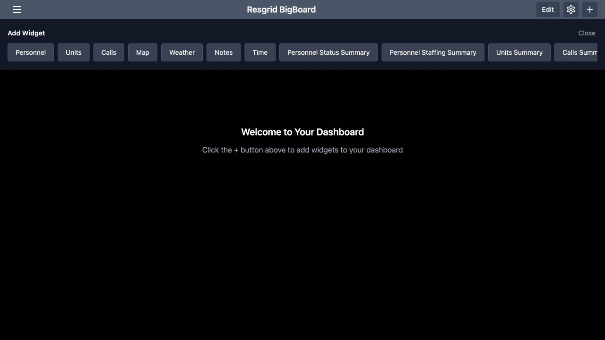
Practice
Use the plus control to add Calls, Units, Personnel and Time to a training board.
Step 3
Give the Calls widget enough room
Open the settings gear in the header and select Calls. Scroll to Widget Size. In this recorded desktop example, Width is ten grid units and Height is four. Adjust the width and height sliders to give the incident table enough room, then use Save to return to the board. Choose sizes for your actual display. A wider widget gives long incident names and addresses more horizontal space, while additional height makes more rows visible.
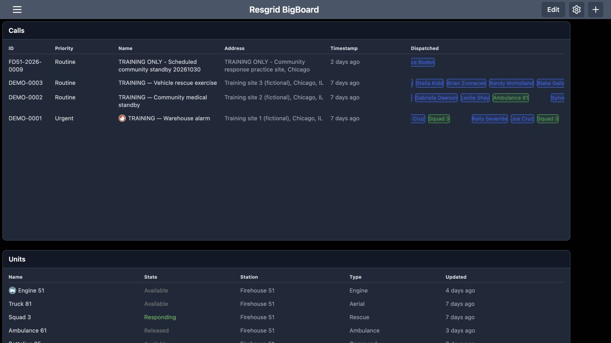
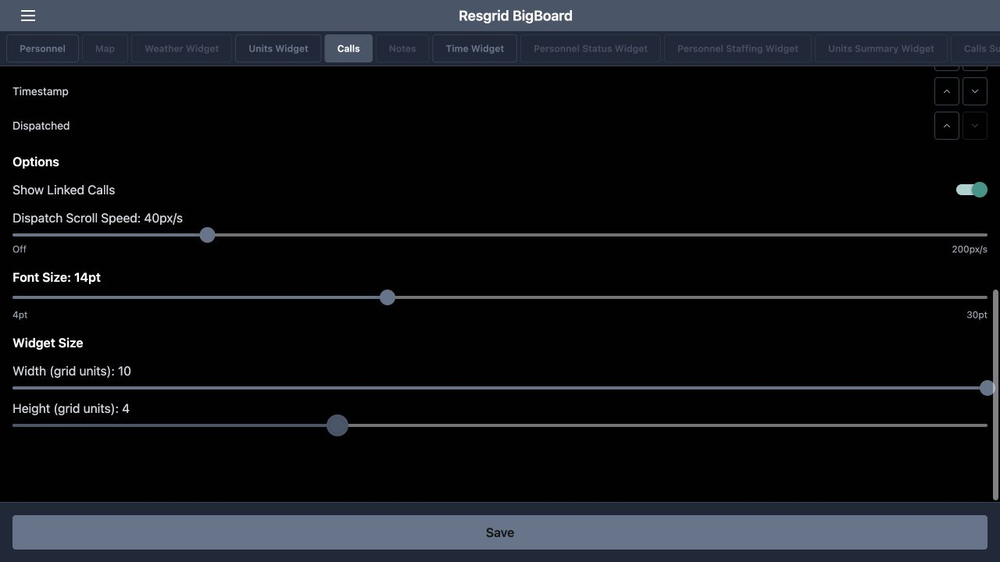
Practice
Adjust the Calls width and height, save, and check the resulting table.
Step 4
Bring Priority beside the call identifier
In Calls settings, find Column Order and the instruction to use the arrows. Move Priority upward until the first three columns are I D, Priority and Name. Use the up arrow on the Priority row, then Save. This changes where the column appears. It helps a supervisor read an incident identifier and its priority together. We will check the table itself next, because the returned display is the useful confirmation of this setting.
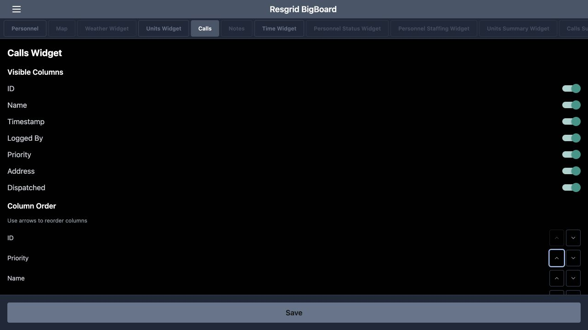
Practice
Move Priority after ID and verify that order on the board.
Step 5
Read the actual incident table
The Calls table now begins with I D, Priority and Name. The warehouse-alarm exercise shows Urgent, while the community medical standby and vehicle-rescue exercise show Routine. Address, Timestamp and Dispatched provide more context across each row. Read these values together when comparing work. The Dispatched column lists dispatched recipients; this screen does not by itself verify that every recipient accepted the assignment or arrived at the incident. Use the relevant response and operational views for those checks.
Practice
Find one training incident and read its identifier, priority, address and dispatched recipients.
Step 6
Set the Units table order and dimensions
Open the gear again and select Units Widget. In the column-order controls, move State immediately after Name. Keep Station, Type and Timestamp after those columns for this example. The Widget Size controls below give this table a width of ten and a height of three grid units. Save and inspect the result. Putting the resource name beside its state makes it easier to scan which vehicle or team needs attention during a briefing.
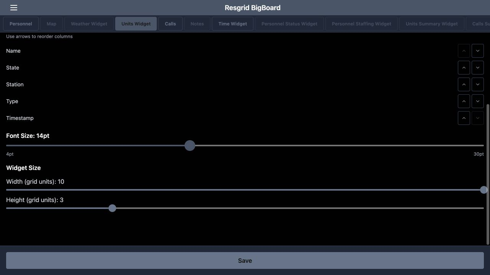
Practice
Place State after Name, choose readable dimensions, and save.
Step 7
Compare resource states and update age
On the resulting Units table, Engine fifty-one is Available, Squad three is Responding, and Reserve Engine fifty-one is Out of Service. The community-response vehicle demonstrates that the table can include resources beyond fire apparatus. A security patrol vehicle or industrial response resource can be organized using the same fields. Read Updated as well as State. Several fictional exercise entries are days old, so a displayed state alone is not evidence of a fresh readiness report.
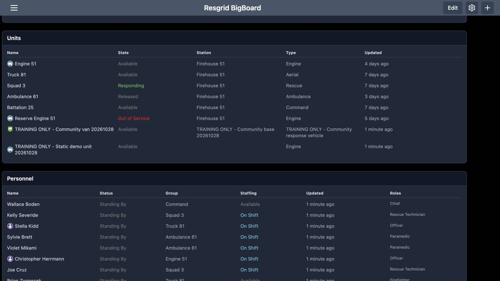
Practice
Compare three unit states and check their displayed update age.
Step 8
Choose a personnel column order
Select Personnel in the configuration tabs and find Column Order. For this example, place Status immediately after Name, followed by Group and Staffing, then Timestamp and Roles. Use the arrows on each row to move the columns, then Save. This arrangement brings an individual and their operational status together while keeping team assignment, staffing and qualifications visible elsewhere in the same row. Choose a sequence that your supervisors can read consistently during handover.
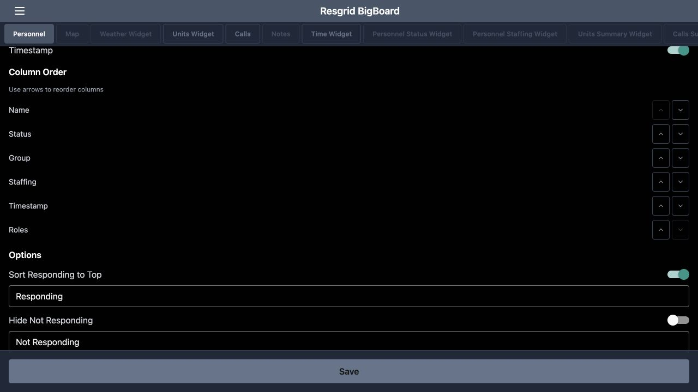
Practice
Set the personnel column sequence and compare it with the displayed table.
Step 9
Distinguish personnel status from staffing
The Personnel table shows Status and Staffing as separate columns. In this exercise, Darren Ritter has Standing By under Status and Delayed under Staffing. Blake Gallo has Standing By and Unavailable. These are different pieces of information, so read both before deciding that someone is ready for work. Roles and Group add organizational context, and Updated provides the displayed age of the entry. The Time widget below supplies a visible clock alongside the readiness information.
Practice
Read one person’s Status and Staffing separately and check the update age.
Step 10
Enter edit mode and find the widget controls
Return to the dashboard and select Edit in the header. The button changes to Done, and widget headings show a grip and a red removal control. A temporary Notes widget has been added beside Time for this layout exercise. The grip is the place to begin moving the widget. Check the heading before using a removal control, so you change the intended panel rather than another widget on a crowded display.
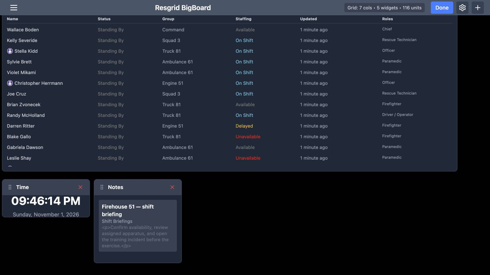
Practice
Enter Edit and identify the grip and removal control on the temporary Notes widget.
Step 11
Move the temporary widget
Drag the temporary Notes widget by its heading grip to the right. The resulting view shows Notes farther across the board, with Time remaining on the left. This is a layout change. It does not change the department note itself. Use the same placement check when arranging a shared display: confirm the final location of the panel and make sure important information is still visible at the distance from which people will read it.
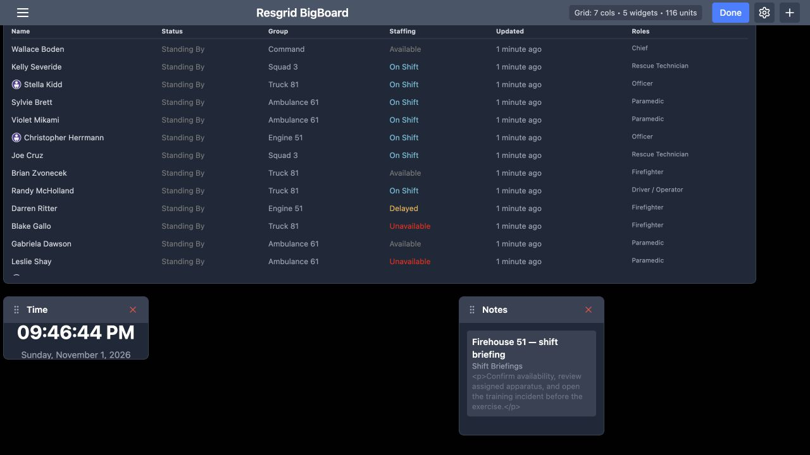
Practice
Move a temporary widget and inspect its resulting position.
Step 12
Remove the temporary panel and finish editing
Select the red removal control on the temporary Notes widget. That panel disappears, and the board returns to four widgets: Calls, Units, Personnel and Time. The pictured lower part of the board shows Personnel and Time remaining. Select Done to leave edit mode. Removing this display widget does not delete the underlying department note. Keep only the panels needed for this particular display, then check that its important tables remain readable.
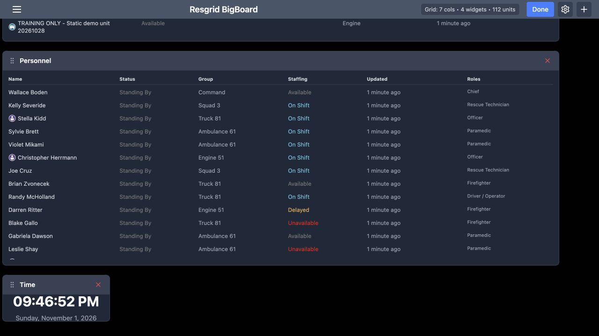
Practice
Remove only the temporary Notes widget and select Done.
Step 13
Reload and verify the saved display
Reload Big Board to check the saved result. Calls still begins with I D, Priority and Name. Scroll down to confirm that Personnel keeps its chosen sequence and that Time remains on the board. In this example, the larger tables require scrolling. For a wall display, choose a smaller set of panels that fits the screen and verify it on the actual monitor. For an interactive coordination desk, decide which tables staff will scroll through during routine work.
Practice
Reload, compare the returned columns and widgets, and verify readability on the intended screen.
Examples for your department
- Fire / EMS
- Compare apparatus states, incident priority and personnel readiness.
- Community response
- Review community paramedicine or mental health team staffing alongside active work.
- Search and rescue
- Read team and resource readiness together during coordination.
- Security
- Review patrol resources and personnel readiness on a control-room display.
- Wildland
- Use consistent resource and personnel columns during contractor handovers.
- Industrial
- Review resource availability and update age during a response-team briefing.
Transcript
Download transcriptRead the complete transcript
Big Board: build and verify an operational display Audience: Department administrators, Duty supervisors, Dispatch and coordination teams, Department trainers Choose what a shared display should answer Resgrid Big Board brings department information into configurable widgets. Here, the Personnel table shows operational status beside staffing, with a clock below it. A duty supervisor can use this display to review readiness during a handover. The same approach can support a security control room, search-and-rescue coordination desk, community paramedicine or mental health response team, wildland contractor, industrial response team, or fire and E M S department. This walkthrough builds a readable board using fictional training data. Practice: Decide which readiness and incident questions your display must answer. Start with the actual widget chooser Start on the empty dashboard. The message directs you to the plus button in the upper right. Select it to open Add Widget. The chooser includes Calls, Units, Personnel and Time. Add those four widgets for this exercise, choosing each from the menu. The chooser also offers other widget types. Add information for a specific audience and purpose; a coordination desk and a shared briefing display may need different amounts of detail. Practice: Use the plus control to add Calls, Units, Personnel and Time to a training board. Give the Calls widget enough room Open the settings gear in the header and select Calls. Scroll to Widget Size. In this recorded desktop example, Width is ten grid units and Height is four. Adjust the width and height sliders to give the incident table enough room, then use Save to return to the board. Choose sizes for your actual display. A wider widget gives long incident names and addresses more horizontal space, while additional height makes more rows visible. Practice: Adjust the Calls width and height, save, and check the resulting table. Bring Priority beside the call identifier In Calls settings, find Column Order and the instruction to use the arrows. Move Priority upward until the first three columns are I D, Priority and Name. Use the up arrow on the Priority row, then Save. This changes where the column appears. It helps a supervisor read an incident identifier and its priority together. We will check the table itself next, because the returned display is the useful confirmation of this setting. Practice: Move Priority after ID and verify that order on the board. Read the actual incident table The Calls table now begins with I D, Priority and Name. The warehouse-alarm exercise shows Urgent, while the community medical standby and vehicle-rescue exercise show Routine. Address, Timestamp and Dispatched provide more context across each row. Read these values together when comparing work. The Dispatched column lists dispatched recipients; this screen does not by itself verify that every recipient accepted the assignment or arrived at the incident. Use the relevant response and operational views for those checks. Practice: Find one training incident and read its identifier, priority, address and dispatched recipients. Set the Units table order and dimensions Open the gear again and select Units Widget. In the column-order controls, move State immediately after Name. Keep Station, Type and Timestamp after those columns for this example. The Widget Size controls below give this table a width of ten and a height of three grid units. Save and inspect the result. Putting the resource name beside its state makes it easier to scan which vehicle or team needs attention during a briefing. Practice: Place State after Name, choose readable dimensions, and save. Compare resource states and update age On the resulting Units table, Engine fifty-one is Available, Squad three is Responding, and Reserve Engine fifty-one is Out of Service. The community-response vehicle demonstrates that the table can include resources beyond fire apparatus. A security patrol vehicle or industrial response resource can be organized using the same fields. Read Updated as well as State. Several fictional exercise entries are days old, so a displayed state alone is not evidence of a fresh readiness report. Practice: Compare three unit states and check their displayed update age. Choose a personnel column order Select Personnel in the configuration tabs and find Column Order. For this example, place Status immediately after Name, followed by Group and Staffing, then Timestamp and Roles. Use the arrows on each row to move the columns, then Save. This arrangement brings an individual and their operational status together while keeping team assignment, staffing and qualifications visible elsewhere in the same row. Choose a sequence that your supervisors can read consistently during handover. Practice: Set the personnel column sequence and compare it with the displayed table. Distinguish personnel status from staffing The Personnel table shows Status and Staffing as separate columns. In this exercise, Darren Ritter has Standing By under Status and Delayed under Staffing. Blake Gallo has Standing By and Unavailable. These are different pieces of information, so read both before deciding that someone is ready for work. Roles and Group add organizational context, and Updated provides the displayed age of the entry. The Time widget below supplies a visible clock alongside the readiness information. Practice: Read one person’s Status and Staffing separately and check the update age. Enter edit mode and find the widget controls Return to the dashboard and select Edit in the header. The button changes to Done, and widget headings show a grip and a red removal control. A temporary Notes widget has been added beside Time for this layout exercise. The grip is the place to begin moving the widget. Check the heading before using a removal control, so you change the intended panel rather than another widget on a crowded display. Practice: Enter Edit and identify the grip and removal control on the temporary Notes widget. Move the temporary widget Drag the temporary Notes widget by its heading grip to the right. The resulting view shows Notes farther across the board, with Time remaining on the left. This is a layout change. It does not change the department note itself. Use the same placement check when arranging a shared display: confirm the final location of the panel and make sure important information is still visible at the distance from which people will read it. Practice: Move a temporary widget and inspect its resulting position. Remove the temporary panel and finish editing Select the red removal control on the temporary Notes widget. That panel disappears, and the board returns to four widgets: Calls, Units, Personnel and Time. The pictured lower part of the board shows Personnel and Time remaining. Select Done to leave edit mode. Removing this display widget does not delete the underlying department note. Keep only the panels needed for this particular display, then check that its important tables remain readable. Practice: Remove only the temporary Notes widget and select Done. Reload and verify the saved display Reload Big Board to check the saved result. Calls still begins with I D, Priority and Name. Scroll down to confirm that Personnel keeps its chosen sequence and that Time remains on the board. In this example, the larger tables require scrolling. For a wall display, choose a smaller set of panels that fits the screen and verify it on the actual monitor. For an interactive coordination desk, decide which tables staff will scroll through during routine work. Practice: Reload, compare the returned columns and widgets, and verify readability on the intended screen. Examples for your department Fire / EMS: Compare apparatus states, incident priority and personnel readiness. Community response: Review community paramedicine or mental health team staffing alongside active work. Search and rescue: Read team and resource readiness together during coordination. Security: Review patrol resources and personnel readiness on a control-room display. Wildland: Use consistent resource and personnel columns during contractor handovers. Industrial: Review resource availability and update age during a response-team briefing.